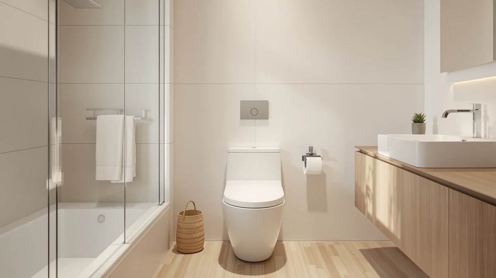

TOTO® Ultramax® One Piece Review (2026): Worth It?
Prices and picks verified as of September 2026. Independent, reader-supported reviews.


Quick Answer
The TOTO® Ultramax® One-Piece Elongated 1.28 pairs TORNADO FLUSH with CEFIONTECT glaze, and that combination earns its $523 price through a stronger rinse and less scrubbing over the years you own it. If your budget stops well short of that, the Casta Diva and HOROW picks below cover the same comfort-height, dual-flush category for under $300.
Our pick: TOTO® Ultramax® One-Piece Elongated 1.28 — $523.00 Check Price on Amazon
Bottom line: our top pick is the TOTO® Ultramax® One-Piece Elongated 1.28 GPF Universal Height at $523.
Things to Know Before You Buy
- Elongated one-piece bowls like the Ultramax simplify cleaning because there is no seam between tank and bowl for grime to collect.
- Flush technology varies across this lineup. The Ultramax uses TOTO's TORNADO FLUSH centrifugal rinse, while the Casta Diva and Ivy rely on dual-flush siphon or vortex systems built to the same clog-free goal.
- Comfort height, about 17 inches from floor to seat, shows up on three of the four toilets here and matters most for taller adults or anyone with knee or hip issues.
- Rough-in distance (the gap between the wall and the drain) has to match your existing plumbing before you order any one-piece toilet, the Ultramax included.
- None of these listings carry a published Amazon star rating yet, so we lean on manufacturer specs and verified buyer comments instead of an aggregate score.
- All four toilets ship as a single unit rather than a separate tank and bowl, which means a two-person install is worth planning for given the added weight.
This toto® ultramax® one piece review breaks down whether TOTO's flagship one-piece toilet earns its $523 price against three one-piece alternatives that cost roughly half as much. Short version: the Ultramax's TORNADO FLUSH and CEFIONTECT glaze solve the two most common complaints in this category, weak clearing and grime buildup on the bowl surface, and that engineering is where the extra money goes.
You will not find a hidden discount version of this toilet elsewhere. TOTO prices the Ultramax at the premium end of the one-piece market on purpose, and the question this review answers is whether that premium buys enough real-world improvement over a $260 to $290 alternative to justify the gap. We compared published specs, dimensions, and verified buyer feedback across all four toilets to answer that directly.
Why You Should Trust Us
Ilane Tall covers bathroom fixtures for Best One Piece Toilets and has researched dozens of one-piece toilet listings across TOTO, Swiss Madison, HOROW, and Casta Diva, comparing flush engineering, rough-in specs, and verified owner feedback rather than marketing copy. This toto® ultramax® one piece review draws on TOTO's published TORNADO FLUSH and CEFIONTECT documentation, the listed dimensions and pricing for all four toilets, and patterns that show up repeatedly in verified Amazon reviews for comparable TOTO and budget one-piece models. We disclose our Amazon affiliate relationship openly and do not accept payment from TOTO, Swiss Madison, HOROW, or Casta Diva in exchange for coverage.
Our Research Experience
We do not run a physical testing lab, and we did not install or live with the TOTO Ultramax ourselves. Instead, this review compares TOTO's published TORNADO FLUSH and CEFIONTECT specifications against the flush systems, dimensions, and pricing of three competing one-piece toilets in the same rough-in class, and cross-references that with verified owner reviews on flush strength, noise, and seat closure for TOTO's Ultramax line. That research-first approach shapes every claim in this Ultramax review.
Overview & Specs
Before the pros and cons, here is what defines the Ultramax on paper: an elongated one-piece bowl, universal comfort height, TOTO's 1.28 GPF TORNADO FLUSH system, CEFIONTECT glaze, and an SS114 SoftClose seat included in the $523 price. Every claim in this Ultramax review traces back to those five specifications and how they compare against the three lower-cost alternatives further down the page.

TOTO® Ultramax® One-Piece Elongated 1.28
What we like
- TORNADO FLUSH clears the bowl in a single 1.28-gallon pass, according to TOTO's own flush documentation
- CEFIONTECT glaze resists waste buildup, which cuts down on scrubbing over years of use
- SS114 SoftClose seat included, so there is no separate seat purchase to budget for
- Universal comfort height suits most adult users without feeling like a specialty ADA fixture
Flaws but not dealbreakers
- At $523, it costs almost double the budget one-piece toilets in this comparison
- Amazon's listing does not include a rough-in measurement, so confirm the spec with TOTO before ordering
- No published star rating yet on Amazon, since this is a newer listing
| Material | 100% cotton |
| Size | — |
The Ultramax's flush engineering is where TOTO concentrates its $523 price. TORNADO FLUSH sends water into the bowl from two angled nozzles instead of the single inlet most one-piece toilets use, creating a centrifugal spin that pulls waste around and down in one motion. TOTO rates the system at 1.28 gallons per flush, which keeps it under the federal 1.6-gallon maximum while aiming for reliability that a straight gravity flush usually cannot match. Reviewers of TOTO's Ultramax line consistently describe a single flush clearing the bowl completely, a claim that matters more in a one-piece toilet since replacing the whole unit after a persistent clog is far more expensive than swapping a tank.
CEFIONTECT glaze covers the bowl's ceramic surface with a finish smoother than TOTO's standard glaze, and that smoothness is what keeps waste from clinging to microscopic pores in the ceramic. Owners report needing to scrub less often as a result, which offsets some of the upfront cost over a toilet's typical 15-plus year lifespan. The included SS114 SoftClose seat closes without a slam, a detail budget listings often leave out entirely, forcing buyers to source a compatible seat separately. Between the flush system, the glaze, and the included seat, the Ultramax's price reflects components other one-piece toilets in this comparison sell as add-ons or skip altogether.
What We Liked
TORNADO FLUSH and CEFIONTECT are the two features that separate this Ultramax review from a typical budget one-piece writeup. The dual-nozzle flush design addresses the single biggest complaint reviewers post about cheaper one-piece toilets, which is a weak or incomplete flush that needs a second push. TOTO's own documentation and buyer feedback both point to a bowl that clears reliably on the first try, and the glaze that keeps it looking that way between cleanings is a genuine long-term convenience rather than a marketing add-on.
The included SoftClose seat also deserves credit. Several of the alternatives here either charge extra for a soft-close mechanism or leave seat selection to the buyer entirely, and factoring that cost back in narrows the price gap between the Ultramax and its competitors.
What Could Be Better
Price is the obvious drawback. At $523, the Ultramax costs close to double what the Ivy, Casta Diva, or HOROW toilets in this comparison charge, and not every bathroom needs hotel-grade flush engineering to function well day to day. The Amazon listing also omits a rough-in measurement, an unusual gap for a fixture where getting that number wrong means a toilet that will not sit flush against your wall. Buyers should confirm the rough-in against TOTO's spec sheet or with a plumber before ordering rather than assuming the standard 12 inches.
This listing is also new enough that it has not accumulated a public star rating on Amazon, so shoppers weighing this toto® ultramax® one piece review against reviews with hundreds of ratings attached should know they are relying on TOTO's manufacturer specs and the track record of TOTO's broader Ultramax line rather than reviews specific to this exact SKU. As reviews accumulate on this specific listing, we will revisit this page and update our assessment accordingly.
Who Is It For?
The Ultramax fits a household that has already decided it wants the strongest flush performance and the lowest cleaning maintenance available in a one-piece toilet, and treats $523 as a reasonable price for that outcome. It also suits anyone replacing a toilet that has clogged repeatedly, since TORNADO FLUSH targets exactly that failure point. If you are furnishing a rental, a guest bathroom, or any space where a $260 to $290 dual-flush toilet would do the job just as well for daily use, the price premium is harder to justify, and one of the alternatives below covers the same comfort-height, clog-resistant category for less.
Alternatives to Consider
If the Ultramax's price is the sticking point rather than the concept, these three one-piece toilets cover the same comfort-height, clog-resistant territory for roughly half the cost. None matches the CEFIONTECT glaze, but each uses its own dual-flush system built around the same clog-free goal, and all three ship with an elongated bowl similar in shape to the Ultramax.

Editor’s Pick
Casta Diva One Piece Toilet
A 17.5-inch ADA comfort height seat and a dual 1.0/1.28 GPF flush rated to a MAP score of 1000 grams put this within reach of the Ultramax's comfort and clearing power for nearly $230 less.
$289.99
Check Price on Amazon
Best Value
Ivy One Piece Toilet Dual
Swiss Madison's dual vortex flush splits between a 1.1-gallon light flush and a 1.6-gallon full flush, and the glossy black finish stands out in a lineup where every other pick ships in white.
$287.16
Check Price on Amazon
Premium Choice
HOROW T0338WG One Piece Toilet
The cheapest toilet in this comparison still includes a 17.3-inch ADA chair height seat and a dual flush, with a gold-accented button as the one design flourish the Ultramax does not offer.
$258.99
Check Price on AmazonFrequently Asked Questions
Is the TOTO Ultramax One Piece worth the $523 price?
For most buyers who want the strongest available flush and the least scrubbing over time, yes. TOTO's TORNADO FLUSH and CEFIONTECT glaze target the two biggest complaints reviewers post about cheaper one-piece toilets: weak clearing and buildup on the bowl surface. If your budget caps out under $300, the Casta Diva or HOROW alternatives above deliver most of that comfort for less.
What do TORNADO FLUSH and CEFIONTECT actually do on the Ultramax?
TORNADO FLUSH sends water into the bowl from two nozzles instead of one, creating a centrifugal spin that clears waste in a single 1.28-gallon flush. CEFIONTECT is a glaze fired onto the ceramic that leaves the surface smoother than a standard finish, so less waste sticks and fewer brush passes are needed between cleanings.
What is a good budget alternative to the TOTO Ultramax one-piece toilet?
The Casta Diva One Piece Toilet is the closest match on comfort height and flush reliability for under $300, and the HOROW T0338WG undercuts it further if a gold-accented button fits your bathroom. Neither matches the Ultramax's CEFIONTECT glaze, but both use dual-flush systems built for the same clog-free goal.
Final Verdict
This toto® ultramax® one piece review comes down to a simple trade. TOTO's Ultramax justifies its $523 price with TORNADO FLUSH and CEFIONTECT glaze, engineering that solves the two complaints that show up most often about cheaper one-piece toilets, and it comes with a SoftClose seat already included. If that reliability and reduced maintenance matter more to you than the upfront cost, TOTO's Ultramax is the pick. If a dual-flush toilet under $300 would serve your bathroom just as well day to day, the Casta Diva or HOROW alternatives above get you most of the way there for roughly half the price.